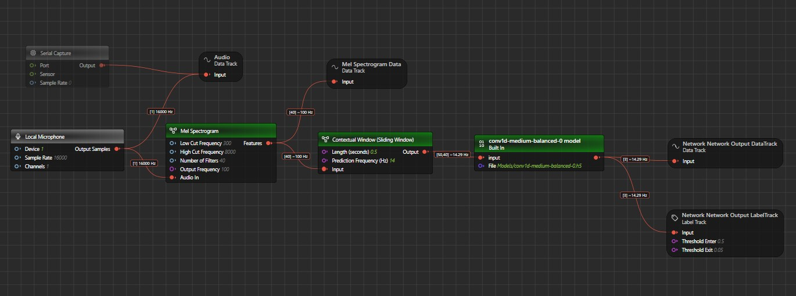
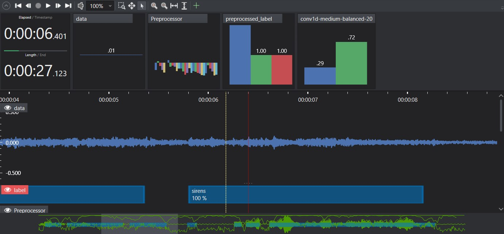

Imagimob Studio Review
Imagimob Studio Review - End-to-End platform for Edge AI applications
Imagimob Studio is an end-to-end platform designed for developing Edge AI and Machine Learning applications. The platform covers the machine learning workflow from data collection to model deployment in embedded devices to support both experts and non-experts in building production grade models.
Key Features
Intuitive Interface and Graph UX
Imagimob Studio offers dynamic visualisations throughout the machine learning workflow, including the data distribution and model performance. Moreover, Imagimob Studio employs an intuitive interface to support its functionalities, an example of which is the session view with overlapping tracks for displaying the original audio track alongside labels, predicted labels, and processed tracks. This design choice facilitates the data annotation process, as well as providing an overview of model performance on a specific data file.
In a recent development, Graph UX is introduced which enables a different approach to visualise the machine learning workflow. This approach aligns with the representation of neural networks, in which the original data is processed layer-by-layer by passing through nodes of a connected network. Graph UX adopts such a concept and adapts it to the machine learning workflow. Each process in the overall flow, including data collection and annotation, preprocessing, and inference, becomes a node drawn in a canvas with defined inputs and outputs. This design provides a comprehensive view of these processes for better management and understanding of the workflow.

Data Management
- Integration with Sensors: Easily connect and collect data from various sensors and hardware platforms, including those running Python.
- Annotation Tools: Efficiently label and manage data with drag-and-drop capabilities, auto-annotation scripts, and visualisation tools to verify data consistency.
- Dataset Management: Create, shuffle, and manage training, validation, and test sets.
- Error Detection: Automatically detect and correct data inconsistencies to avoid costly mistakes.

Model Building
- AutoML: Automatically generate high-performance models tailored to your data.
- Parallel Training: Train multiple models simultaneously in the cloud for faster results.
- Custom Models: Import and modify models from TensorFlow if needed.
- Real-Time Evaluation: Visualise model predictions on the same timeline as your data, allowing for thorough performance analysis before deployment.
- One-Click Deployment: Convert models into optimised C code with a simple API for deployment on any platform supporting C.
Use Cases
- Predictive Maintenance: Detects machine anomalies in real-time.
- Audio Applications: Classifies sound events and recognises sound environments.
- Gesture Recognition: Detects hand gestures using sensors.
- Signal Classification: Identifies repeatable patterns from any sensor data.
- Fall Detection: Utilises IMUs or accelerometers for accurate fall detection.
- Material Detection: Performs real-time material detection with low-power radars.
Conclusion
Imagimob Studio is a powerful, user-friendly solution for developing edge AI applications. Its comprehensive feature set, intuitive interface, and robust support make it an ideal choice for both novice and experienced developers aiming to deploy machine learning models on edge devices.
For more detailed information, visit Imagimob Studio homepage and Imagimob Studio documentation.